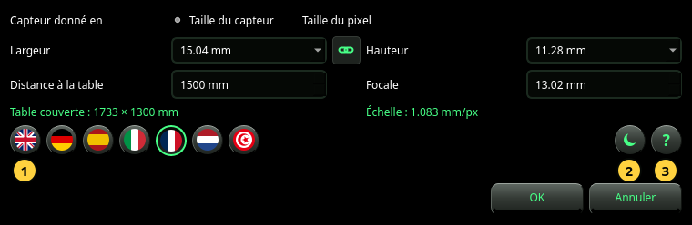

Réglages
La caméra qui donne l'échelle, la langue, le thème et le manuel.
Réglages ouvre la boîte de dialogue Réglages. Elle contient ce que la photo seule ne peut pas dire : à quelle distance de la table se trouve la caméra et, quand la photo ne l'indique pas, l'objectif et le capteur. Elle choisit aussi la langue et le thème, et ouvre ce manuel.


La caméra
- Capteur donné en — la manière de décrire le capteur : par sa Taille du capteur (largeur × hauteur en mm) ou par sa Taille du pixel (largeur × hauteur d'un pixel en µm). Prenez Taille du capteur, sauf si vous savez que la photo est à la pleine résolution du capteur.
- Largeur et Hauteur — la taille du capteur, ou celle d'un pixel. Choisissez une entrée de la liste ou tapez un nombre. En mode Taille du capteur, la liste nomme les formats de capteur courants (1/2.3″, 1″, APS-C, plein format et d'autres) ; en choisir un règle aussi sa hauteur.
- La chaîne entre les deux — activée, la hauteur suit la largeur (pixel carré ou capteur carré). Elle se désactive d'elle-même quand un capteur nommé a une hauteur différente.
- Distance à la table — de la caméra au plateau de la table, en mm. Mesurez-la : chaque millimètre compte (voir Référence).
- Focale — la focale de l'objectif en mm, telle qu'elle est inscrite sur l'objectif ou affichée par la caméra. Prenez la focale réelle, pas l'équivalent 35 mm.
Sous les champs, en vert, la boîte de dialogue montre ce que donnent ces valeurs :
- Table couverte — la partie de la table que montre la photo, en mm.
- Échelle — la taille d'un pixel sur la table, en mm/px. Deux nombres (par exemple 0.578 × 0.646 mm/px) signifient que les pixels ne sont pas carrés.
Un résultat qui a besoin de la taille de la photo affiche — (nécessite une photo) tant qu'aucune photo n'est montrée dans la fenêtre.
Les touches rondes
- Les drapeaux — la langue. Un drapeau change aussitôt la boîte de dialogue, pour que vous puissiez la lire ; l'application entière ne suit qu'après OK. L'arabe s'écrit de droite à gauche.
- Le thème — panneaux sombres ou clairs. Comme la langue, il est montré dans la boîte de dialogue et appliqué avec OK.
- Le ? — ouvre ce manuel dans une fenêtre à part, dans la langue de la boîte de dialogue.
OK garde tout. Si une photo est affichée et que la caméra a changé, elle est aussitôt analysée de nouveau. Annuler ou Échap ne change rien, pas même la langue que vous regardiez.